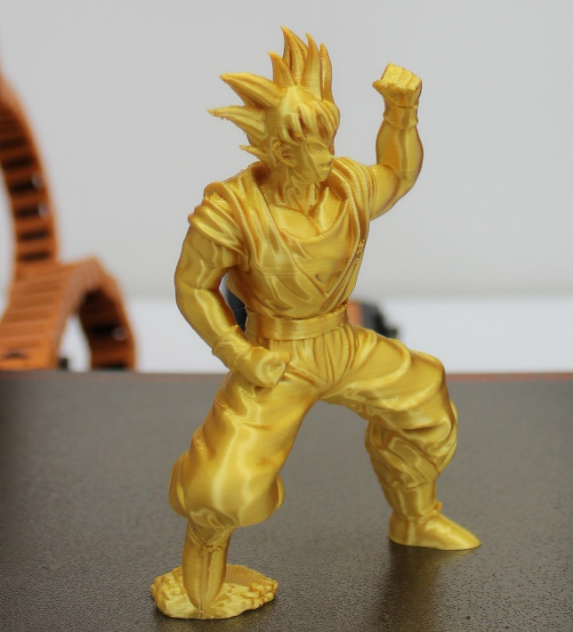

In my personal time, I spend time developing skills such as:
Design and printing in 3D printer

I learned by my own motivation to design mechanical parts in 3D, which allowed me to develop skills in
handling software such as 360 Fusion and SolidWork.
Then I acquired my filament 3d printer with which I developed several projects, among which the creation
of human prostheses and toys stands out.
Trainee Developer
Coding is one of the tools that I enjoy learning and executing the most, since by integrating or executing the ideas and achieving the result materialize and that also works properly, it allows to obtain a degree of professional satisfaction.
Additionally, I think that the trend has always been in the programming and development of technology.
Nature

I'm passionate about the beach and I enjoy having contact with the sea and the sand, since they allow me to feel a direct contact with nature, additionally I enjoy visiting some parks when I go for a walk.
These environments help to clear the mind, breathe a different air from the work routine, which can sometimes be a bit absorbing. These environments are conducive to meditate and ideal for awakening new ideas
Literature
I love reading books related to growth, personal, professional, business and health. I am a supporter that the best way to improve the world is by contributing to make improvements, and I believe that using this tool allows you to obtain tools to create answers to simple and complex problems.
I think that in the books there is more than enough information to promote new ideas of development and learning.
Only we need to assemble the pieces.